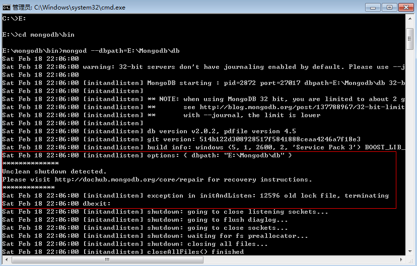
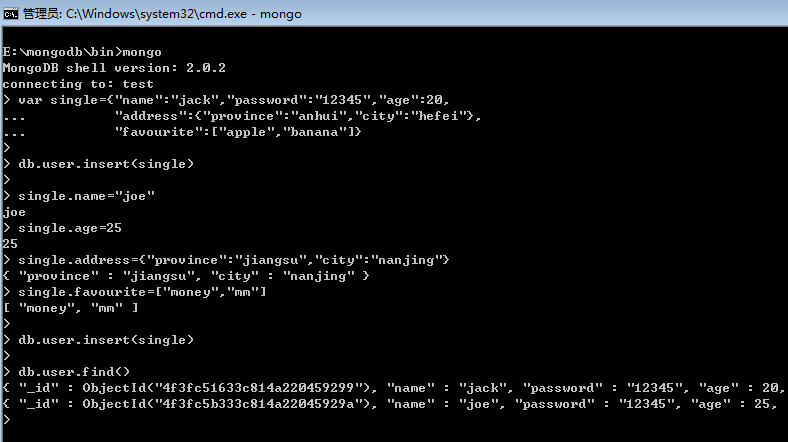
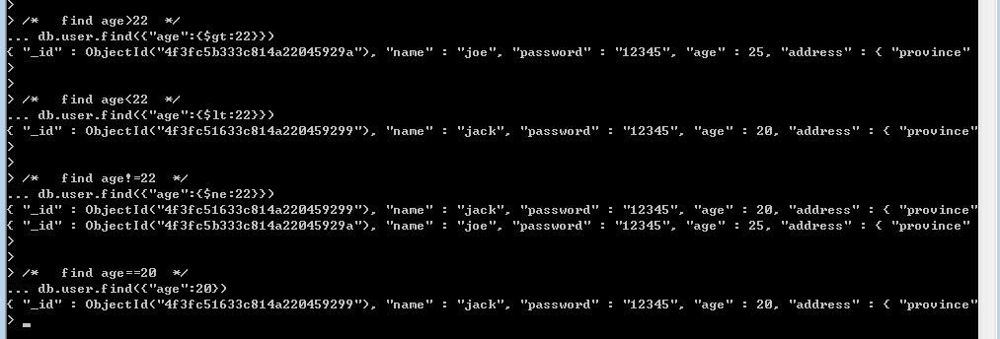
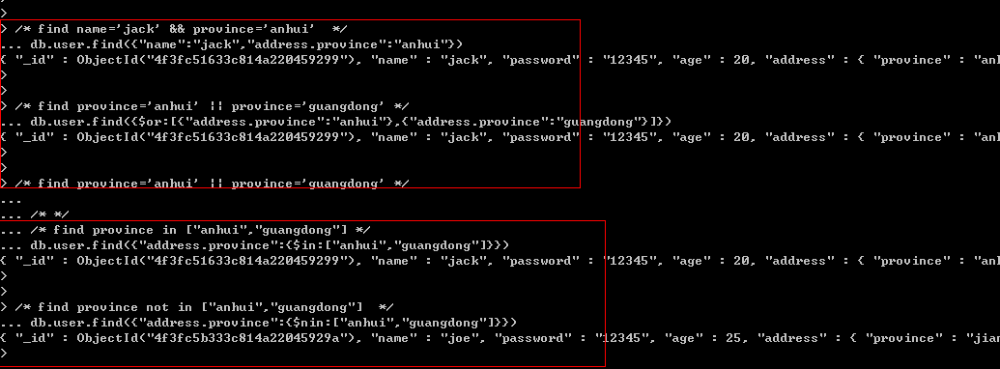
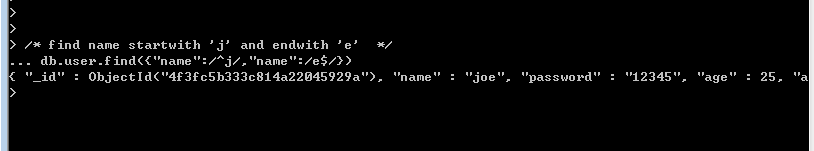
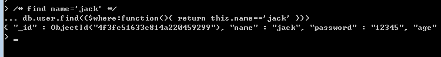
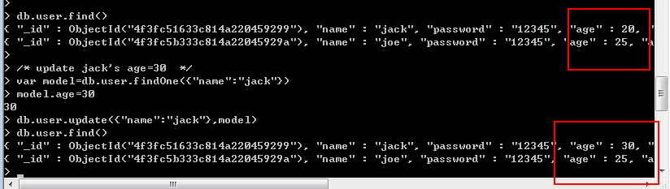
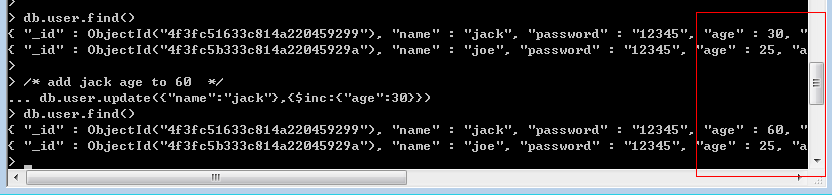
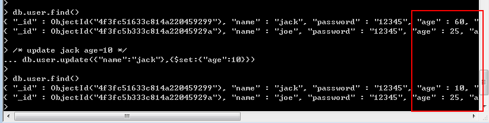
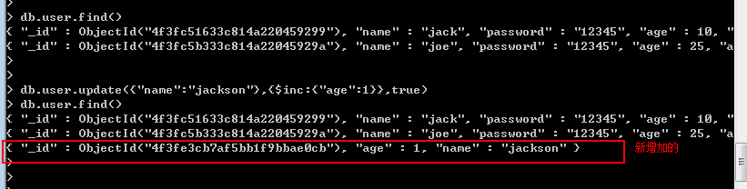

一： Insert操作
上一篇也说过,文档是采用“K-V”格式存储的，如果大家对JSON比较熟悉的话，我相信学mongodb是手到擒来，我们知道JSON里面Value
可能是“字符串”，可能是“数组”，又有可能是内嵌的一个JSON对象，相同的方式也适合于BSON。
常见的插入操作也就两种形式存在：“单条插入”和“批量插入”。
① 单条插入
先前也说了，mongo命令打开的是一个javascript shell。所以js的语法在这里面都行得通，看起来是不是很牛X。

② 批量插入
这玩意跟“单条插入”的差异相信大家应该知道，由于mongodb中没有提供给shell的“批量插入方法”，没关系，各个语言的driver都打通
了跟mongodb内部的批量插入方法，因为该方法是不可或缺的，如果大家非要模拟下批量插入的话，可以自己写了for循环，里面就是insert。
二：Find操作
日常开发中，我们玩查询，玩的最多的也就是二类：
①： >, >=, <, <=, !=, =。
②：And，OR，In，NotIn
这些操作在mongodb里面都封装好了，下面就一一介绍：
<1>"$gt", "$gte", "$lt", "$lte", "$ne", "没有特殊关键字"，这些跟上面是一一对应的，举几个例子。

<2> "无关键字“, "$or", "$in"，"$nin" 同样我也是举几个例子

<3> 在mongodb中还有一个特殊的匹配，那就是“正则表达式”，这玩意威力很强的。

<4> 有时查询很复杂，很蛋疼，不过没关系，mongodb给我们祭出了大招，它就是$where，为什么这么说，是因为$where中的value
就是我们非常熟悉，非常热爱的js来助我们一马平川。

三：Update操作
更新操作无非也就两种，整体更新和局部更新，使用场合相信大家也清楚。
<1> 整体更新
不知道大家可还记得，我在上一篇使用update的时候，其实那种update是属于整体更新。

<2> 局部更新
有时候我们仅仅需要更新一个字段，而不是整体更新，那么我们该如何做呢？easy的问题，mongodb中已经给我们提供了两个
修改器： $inc 和 $set。
① $inc修改器
$inc也就是increase的缩写，学过sql server 的同学应该很熟悉，比如我们做一个在线用户状态记录，每次修改会在原有的基础上
自增$inc指定的值，如果“文档”中没有此key，则会创建key，下面的例子一看就懂。

② $set修改器
啥也不说了，直接上代码

<3> upsert操作
这个可是mongodb创造出来的“词”，大家还记得update方法的第一次参数是“查询条件”吗？，那么这个upsert操作就是说：如果我
没有查到，我就在数据库里面新增一条，其实这样也有好处，就是避免了我在数据库里面判断是update还是add操作，使用起来很简单
将update的第三个参数设为true即可。

<4> 批量更新
在mongodb中如果匹配多条，默认的情况下只更新第一条，那么如果我们有需求必须批量更新，那么在mongodb中实现也是很简单
的，在update的第四个参数中设为true即可。例子就不举了。
eg:> db.user.update({"name":{$ne:"zhangsan"}},{$inc:{"age":1}},false,true)
四: Remove操作
这个操作在上一篇简单的说过，这里就不赘述了。